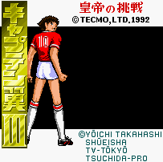

Captain Tsubasa - SNES Games

- Company: Tecmo
- Date Released: 17 July 1992
- Price (in yen): 8900
- Genre: Soccer simulation
![[Captain Tsubasa Part 4: Pro's Rivals]](images/snesPart4.gif)
- Company: Tecmo
- Date Released: 1993
- Price (in yen): 9700
- Genre: Soccer simulation
![[Captain Tsubasa Part 5]](images/snesPart5.gif)
- US Title: Boy's Soccer Team 5
- Company: Tecmo
- Date Released: 1994
- Price (in yen): 9980
- Genre: Soccer simulation
- Company: Bandai
- Date Released: 1995
- Genre: Soccer simulation
Anime Video Game Resource Center © 1998 by Luis A. Cruz